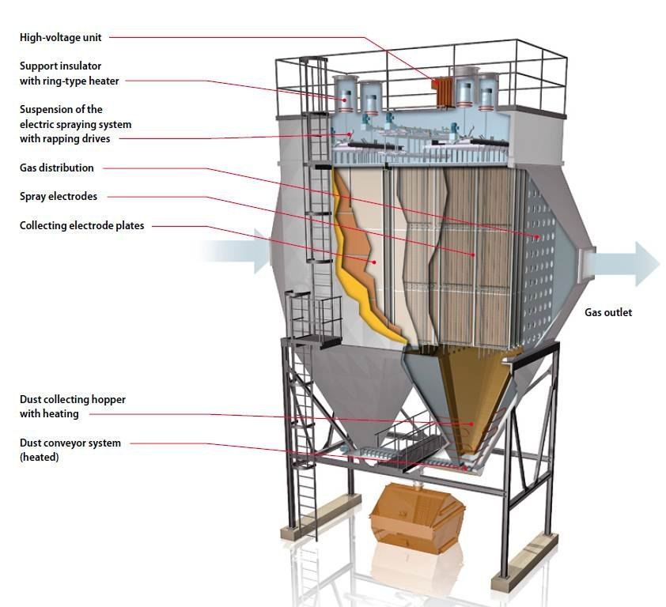

Introduction
Boiler operations, particularly those utilizing fossil fuels (coal, oil, gas), can release various pollutants into the atmosphere if not controlled. These pollutants can have adverse effects on human health and the environment. Key pollutants include:
- Particulate Matter (PM): Fine solid particles like fly ash, soot, and unburnt fuel. Can cause respiratory problems and reduce visibility.
- Sulfur Oxides (SOx): Primarily sulfur dioxide (SO2) and some sulfur trioxide (SO3), formed from sulfur in the fuel. Major contributors to acid rain and respiratory issues.
- Nitrogen Oxides (NOx): Mainly nitric oxide (NO) and nitrogen dioxide (NO2), formed from nitrogen in the fuel (fuel NOx) or from atmospheric nitrogen at high combustion temperatures (thermal NOx). Contribute to smog, acid rain, and respiratory problems.
- Carbon Dioxide (CO2): A primary greenhouse gas, contributing to climate change. Its reduction primarily involves improving efficiency or carbon capture technologies.
- Carbon Monoxide (CO): A toxic gas resulting from incomplete combustion.
- Volatile Organic Compounds (VOCs): From incomplete combustion of hydrocarbons.
Environmental protection measures focus on minimizing the emission of these pollutants through various control technologies and operational practices.
Particulate Matter (PM) Control
These devices are used to remove solid particles from the flue gas stream before it is released into the atmosphere.
ESP (Electrostatic Precipitator)
- Working Principle:
- Charging: Flue gas containing dust particles passes between high-voltage discharge electrodes (typically wires or rigid frames, negatively charged) and grounded collecting electrodes (plates, positively charged). The discharge electrodes create a corona discharge, releasing electrons. These electrons ionize gas molecules, and these ions, in turn, attach to the dust particles, imparting a negative electrical charge to them.
- Collection: The negatively charged dust particles are attracted by electrostatic forces to the positively charged collecting plates and deposit on them.
- Removal (Rapping): The accumulated dust layer is periodically dislodged from the collecting plates by mechanical rapping (hammering) or vibration. The dislodged dust falls into hoppers located beneath the electrodes.
- Disposal: The collected dust (fly ash) is then removed from the hoppers for disposal or utilization (e.g., in cement production).
- Advantages:
- Very high collection efficiency (often >99.5%) for a wide range of particle sizes, including fine particles.
- Can handle large flue gas volumes and high temperatures (though performance can be temperature-sensitive).
- Low pressure drop, resulting in lower fan power consumption compared to bag filters.
- Durable and suitable for continuous operation.
- Disadvantages:
- Performance is sensitive to flue gas conditions (temperature, moisture content) and dust properties (especially electrical resistivity). High or low resistivity dust can be difficult to collect efficiently.
- High initial capital cost.
- Large physical size.
- Can be less effective for particles with very high resistivity (e.g., some low-sulfur coal ashes).
Cyclone Separator
- Working Principle:
- Flue gas laden with dust particles enters tangentially into the top of a cylindrical or conical chamber.
- This tangential entry creates a strong swirling vortex (cyclonic motion) within the separator.
- Due to centrifugal force, the heavier dust particles are thrown outwards towards the wall of the cyclone.
- The particles lose momentum upon hitting the wall, slide down due to gravity, and are collected in a hopper at the bottom.
- The cleaned gas, being lighter, spirals upwards in an inner vortex and exits from an outlet at the top center of the cyclone.
- Advantages:
- Simple construction with no moving parts (except for rotary airlock at dust discharge).
- Low capital and maintenance costs.
- Can operate at high temperatures and pressures.
- Effective for removing coarser particles (typically >10-20 micrometers).
- Can be used as a pre-cleaner to reduce the load on more efficient downstream collectors like ESPs or bag filters.
- Disadvantages:
- Lower collection efficiency for fine particles (especially <5-10 micrometers) compared to ESPs or bag filters.
- Efficiency decreases with decreasing particle size and density.
- Moderate pressure drop.
Baghouse Filter (Fabric Filter)
- Working Principle:
- Dust-laden flue gas is passed through a multitude of long, cylindrical fabric bags (filters) arranged in a housing (baghouse).
- The fabric acts as a filter medium. As gas passes through, dust particles are captured on the surface of the bags, forming a "dust cake."
- This dust cake itself becomes a highly efficient filter layer, capable of capturing very fine particles.
- Cleaned gas passes through the fabric and exits the baghouse.
- Cleaning Mechanisms: Periodically, the accumulated dust cake must be removed from the bags to maintain reasonable pressure drop and flow. Common cleaning methods include:
- Mechanical Shaking: Bags are shaken to dislodge dust.
- Reverse Air: A flow of clean air in the reverse direction flexes the bags, causing the cake to break and fall.
- Pulse Jet: A short burst of high-pressure compressed air is directed into the top of the bag, creating a shockwave that dislodges the dust cake.
- The dislodged dust falls into a hopper below for removal.
- Advantages:
- Very high collection efficiency (often >99.9%) for a wide range of particle sizes, including very fine (sub-micron) particles.
- Performance is relatively insensitive to dust resistivity or flue gas composition (as long as compatible with fabric).
- Can achieve very low outlet emission levels.
- Disadvantages:
- Temperature limitations imposed by the fabric material (e.g., common fabrics like polyester, PPS, P84, Teflon, fiberglass have different temperature limits).
- Susceptible to chemical attack or blinding if incompatible flue gas constituents are present (e.g., moisture, sticky particles, acidic gases).
- Higher pressure drop compared to ESPs, leading to higher fan power consumption.
- Requires regular bag replacement (maintenance cost).
- Cannot handle very sticky or hygroscopic dusts well.
Other Dust Collectors
- Settling Chambers (Gravity Settlers): Large chambers where the flue gas velocity is significantly reduced, allowing coarser, heavier particles to settle out due to gravity. Simple and low cost, but low efficiency, mainly for very coarse particles (>50-100 micrometers) as pre-cleaners.
- Inertial Separators (Impingement Separators): Utilize the inertia of particles. The gas stream is forced to make sharp turns or pass-through baffles. Heavier particles, due to their inertia, cannot follow the gas streamlines, impinge on a surface, and are collected. More effective than settling chambers but less than cyclones for finer particles.
SOx and NOx Control (Brief Overview)
These are gaseous pollutants requiring different control strategies than particulate matter.
- SOx (Sulfur Oxides) Control:
- Fuel Switching/Pre-treatment: Using low-sulfur fuels (e.g., low-sulfur coal, natural gas) or desulfurizing fuel before combustion.
- In-Furnace Sorbent Injection: Injecting sorbents like powdered limestone or lime directly into the furnace. (Common in FBC)
- Flue Gas Desulfurization (FGD) Systems (Scrubbers): Post-combustion removal.
- Wet Scrubbers: Flue gas is contacted with a slurry of alkaline material (e.g., lime, limestone) which reacts with SO2 to form solid calcium sulfite/sulfate. Most common and efficient.
- Dry Scrubbers (Dry Sorbent Injection - DSI, Spray Dryer Absorption - SDA): A dry sorbent or a slurry is sprayed into the flue gas; the reaction products are dry.
- NOx (Nitrogen Oxides) Control:
- Combustion Modifications (Primary Measures): Aim to reduce NOx formation during combustion.
- Low NOx Burners (LNB): Design burners to create staged combustion with fuel-rich and fuel-lean zones, reducing peak flame temperatures and oxygen availability in critical zones.
- Staged Combustion (Overfire Air - OFA): A portion of combustion air is supplied above the main burners, creating an initial fuel-rich zone (reducing fuel NOx) followed by a burnout zone.
- Flue Gas Recirculation (FGR): A portion of flue gas is recirculated back into the combustion zone to lower flame temperature and oxygen concentration.
- Post-Combustion Treatment (Secondary Measures / DeNOx): Remove NOx from flue gas after formation.
- Selective Catalytic Reduction (SCR): Ammonia (NH3) is injected into the flue gas, which then passes over a catalyst bed. NH3 reacts with NOx to form nitrogen (N2) and water (H2O). Very high NOx removal efficiency (80-95%).
- Selective Non-Catalytic Reduction (SNCR): Ammonia or urea is injected into the flue gas at a specific high-temperature window (typically 850-1100°C) in the upper furnace. No catalyst is needed. Lower efficiency (30-60%) and narrower operating window than SCR.
- Combustion Modifications (Primary Measures): Aim to reduce NOx formation during combustion.
Previous Year Questions:
2018 Q7a: Working of ESP.
The working of an Electrostatic Precipitator (ESP) involves three main steps to remove particulate matter from flue gas:
- Particle Charging:
- Flue gas containing dust particles enters the ESP and passes through a region with high-voltage discharge electrodes (typically wires or rigid frames with sharp points, maintained at a high negative DC voltage, e.g., 20-100 kV) and grounded collecting electrodes (parallel plates).
- The high voltage on the discharge electrodes creates a strong electric field, leading to a "corona discharge" around them. This corona ionizes the gas molecules (e.g., N2, O2) near the discharge electrodes, producing free electrons and positive ions.
- The dust particles passing through this ionized field acquire an electrical charge, predominantly negative, as they are bombarded by the negative ions and electrons moving towards the collecting plates.
- Particle Collection:
- The negatively charged dust particles are then transported by the gas flow into the main electric field between the discharge and collecting electrodes.
- Due to the electrostatic force (Coulomb force), these charged particles migrate towards and deposit onto the oppositely charged (grounded, hence relatively positive) collecting plates.
- Over time, a layer of dust accumulates on these plates.
- Particle Removal (Rapping):
- The collected dust layer must be periodically removed from the plates to maintain ESP efficiency and prevent re-entrainment.
- This is typically done by "rapping" – a system of hammers or vibrators strikes the collecting plates (and sometimes discharge electrodes), dislodging the dust layer.
- The dislodged dust falls in sheets or agglomerates into hoppers located at the bottom of the ESP casing.
- The collected ash is then conveyed from the hoppers for disposal or utilization.
The efficiency of an ESP depends on factors like particle size, dust resistivity, gas velocity, gas temperature, and the design of the ESP (e.g., plate area, electrode spacing, applied voltage).
2019 Q4: Cyclone separator & baghouse filter.
Cyclone Separator:
Working Principle: A cyclone separator removes particulate matter from a gas stream using centrifugal force generated by a swirling gas flow.
- Dust-laden gas enters tangentially at the top of a cylindrical or cono-cylindrical body.
- This tangential entry forces the gas into a spiral or vortex pattern, moving downwards.
- The centrifugal force acting on the particles is much greater than the drag force of the gas, especially for larger/denser particles. This force throws the particles radially outwards towards the cyclone wall.
- Once particles reach the wall, they lose momentum and are carried downwards by gravity and the descending gas flow into a collection hopper at the bottom.
- The cleaned gas, meanwhile, reverses its axial direction and spirals upwards in an inner, smaller-diameter vortex, exiting through a central outlet pipe (vortex finder) at the top.
Advantages: Simple, robust construction; low capital and maintenance cost; no moving parts in the separation zone; can handle high temperatures and pressures; good for coarse particle removal (>10-20 µm).
Disadvantages: Low efficiency for fine particles (<5-10 µm); efficiency affected by gas flow rate; moderate pressure drop.
Applications: Often used as a pre-cleaner for more efficient devices, or for applications where only coarse dust needs to be removed (e.g., woodworking shops, grain handling).
Baghouse Filter (Fabric Filter):
Working Principle: A baghouse filter removes particulate matter from a gas stream by passing the gas through a porous fabric material, which acts as a filter.
- Dust-laden gas enters the baghouse housing, which contains multiple long, tubular or envelope-shaped filter bags made of woven or felted fabric.
- The gas passes from the outside to the inside of the bags (or vice-versa depending on design), and dust particles are intercepted and retained on the surface of the fabric.
- Initially, filtration occurs by direct interception, inertial impaction, and diffusion. As a layer of dust (the "dust cake" or "filter cake") builds up on the bags, this cake itself becomes the primary filtering medium, significantly enhancing the collection efficiency, especially for very fine particles.
- Cleaned gas exits the bags and then the baghouse.
- Periodically, the accumulated dust cake is removed from the bags using a cleaning mechanism (e.g., mechanical shaking, reverse air flow, or pulse-jet cleaning) to prevent excessive pressure drop. The dislodged dust falls into a hopper below.
Advantages: Very high collection efficiency (often >99.9%) for a wide range of particle sizes, including sub-micron particles; performance is relatively independent of dust resistivity; modular design allows for various capacities.
Disadvantages: Fabric material has temperature limitations; susceptible to chemical attack or blinding by sticky/hygroscopic dust; higher pressure drop than ESPs; requires bag replacement and maintenance; cannot handle very high gas temperatures without special (expensive) fabrics or gas cooling.
Applications: Widely used in many industries where high particulate removal efficiency is required (e.g., power plants, cement plants, metallurgical industries, chemical processing).
MCQ:
1. An Electrostatic Precipitator (ESP) primarily works on the principle of:
2. Which particulate control device is most effective for removing very fine particles (e.g., less than 1 micrometer)?
3. The "rapping" mechanism in an ESP is used to:
4. A cyclone separator's efficiency is generally lower for:
5. Which of the following is a primary disadvantage of using a baghouse filter?
6. Selective Catalytic Reduction (SCR) is a technology primarily used to control:
7. Wet scrubbers using a lime/limestone slurry are commonly employed for the removal of:
8. "Low NOx Burners" achieve NOx reduction primarily by: